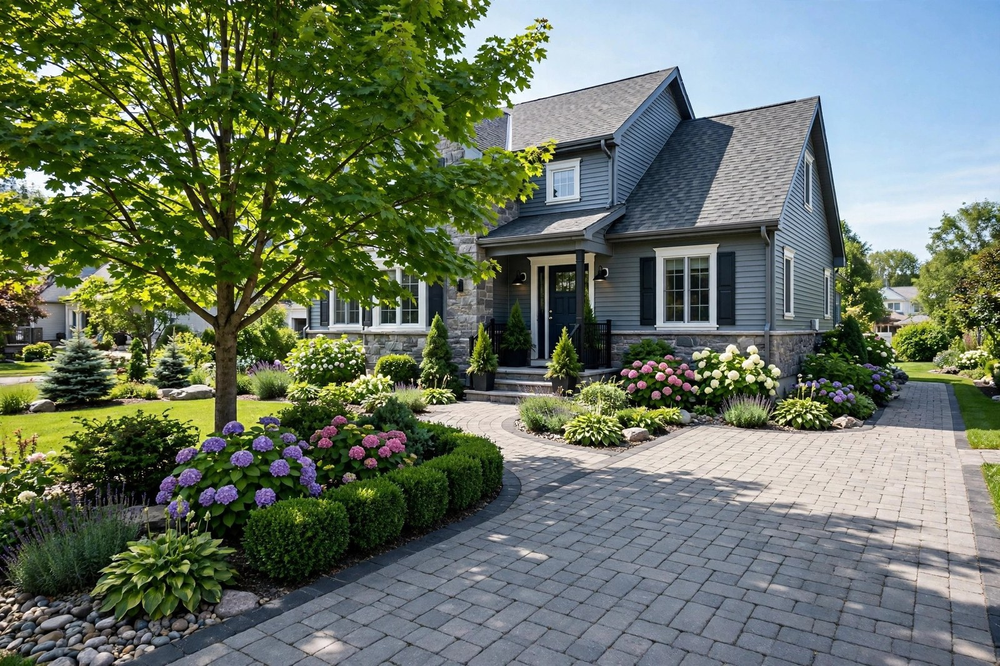
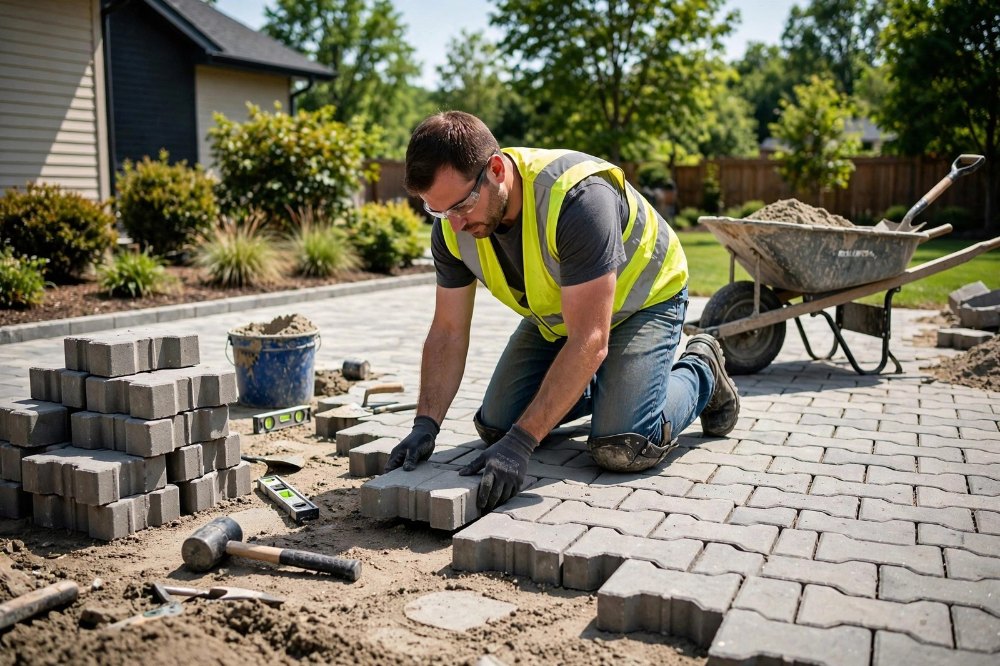
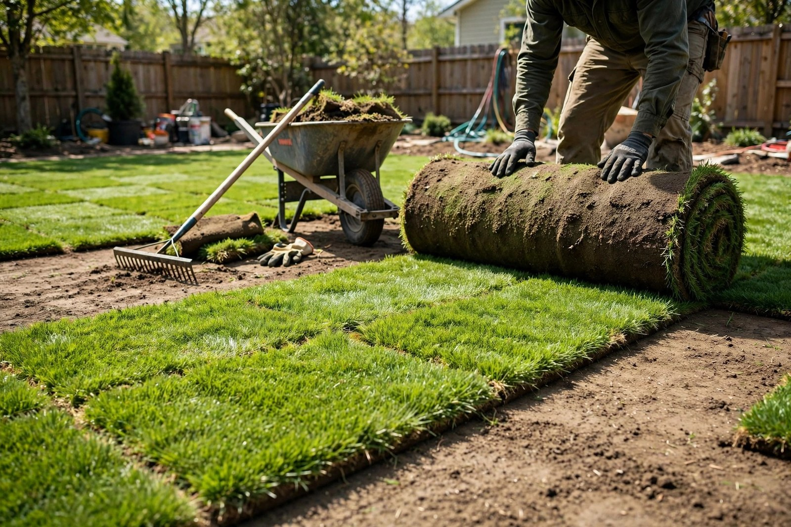
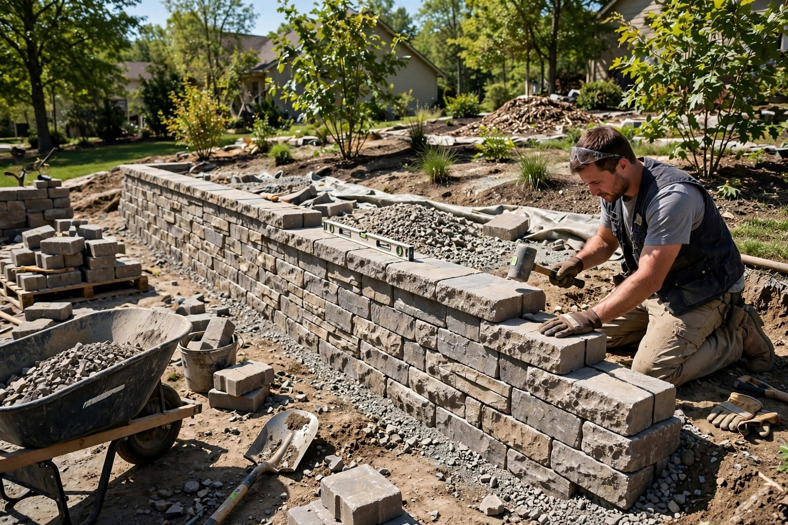

Pose de pavé uni
Entrées de garage, allées et patios en pavé uni — une base solide, un fini impeccable.

Laval, Québec · Aménagement paysager résidentiel
Pavé uni, tourbe, murets décoratifs et pierre de rivière — un travail soigné, fait avec fierté, du premier coup.
Ce que nous faisons
Entrées de garage, allées et patios en pavé uni — une base solide, un fini impeccable.
Des bordures nettes qui structurent vos plates-bandes et gardent tout en place.
Murets de soutènement et bordures décoratives qui ajoutent du relief à votre terrain.
Une pelouse verte et dense en quelques jours — préparation du sol et pose soignée.
Drainage, plates-bandes et accents décoratifs en pierre de rivière naturelle.
Nivellement, tranchées et préparation de terrain — précis, sans dégâts.

Pourquoi nous choisir
On croit aux choses simples : une soumission claire, un prix expliqué d'avance et un travail fait pour durer. Vous savez exactement ce qui sera fait — et pourquoi.
Nos réalisations


Trouvez-nous
Bon à savoir
Oui — appelez-nous au (514) 815-3036 pour discuter de votre projet et recevoir une soumission claire avant le début des travaux.
Pose de pavé uni, bordures en pavé, murets décoratifs en pavé, pose de tourbe, pierre de rivière et mini-excavation.
Lundi au samedi de 7 h à 18 h. Fermé le dimanche.
Appelez-nous au (514) 815-3036 — on vous répond rapidement.
Venez nous voir